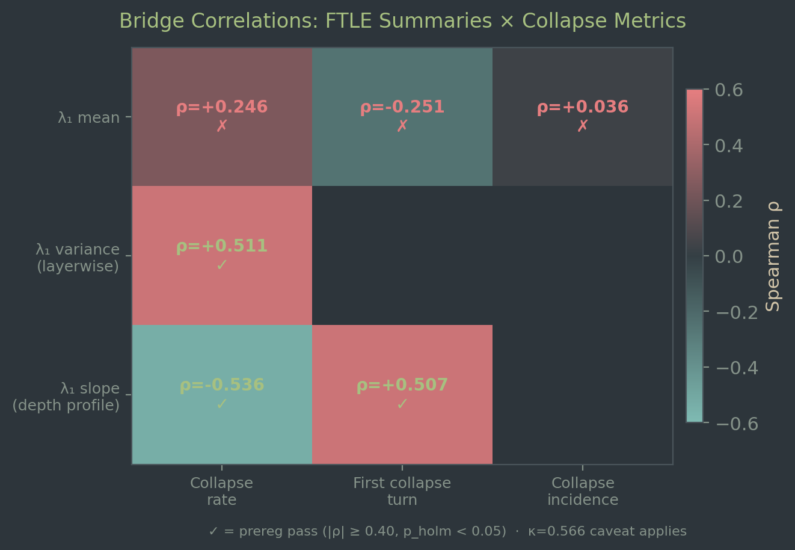
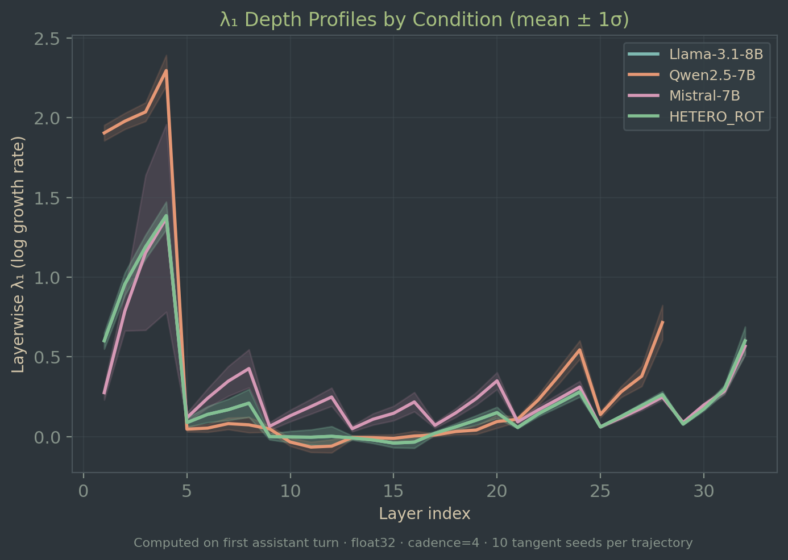

Depth-Dynamics Signatures of Conversational Collapse
Finite-Time Lyapunov Analysis of Transformer Forward Passes
Abstract
We estimate the top-1 finite-time Lyapunov exponent (λ₁) for transformer depth dynamics using forward-mode automatic differentiation (JVP-based tangent propagation) with QR renormalization. Across 720 preregistered trajectories and 7,200 FTLE computations on three 7B-parameter model families, we find that λ₁ profile features—depth-profile slope (ρ = −0.536) and layerwise variance (ρ = +0.511)—show medium-to-large predictive associations with collapse metrics from a companion study. Mean λ₁ alone shows only weak association (|ρ| ≤ 0.25). Three of six preregistered tests pass, meeting the success criterion.
Reliability caveat. Paper A collapse labels have unconfirmed inter-rater reliability (κ = 0.566, threshold 0.80 not met). All bridge correlations are subject to this limitation. Results are reported as predictive associations only—no causal or mechanistic identity is claimed between depth dynamics and conversational dynamics.
Approach
Transformer depth computation can be viewed as a discrete dynamical system: each layer maps the hidden state to a new state through nonlinear transformations. The finite-time Lyapunov exponent (FTLE) quantifies how sensitive this process is to perturbations—how much a small change to the input gets amplified or suppressed across layers [1], [2].
Rather than computing full Jacobians (prohibitive for dmodel = 4096), we use forward-mode AD (JVP) to propagate tangent vectors through the layer stack. QR-based renormalization every 4 layers prevents numerical overflow. For each of 720 trajectories, we compute λ₁ using 10 random tangent seeds and report the mean across seeds.
Three λ₁ summaries
λ₁ mean: Average FTLE across layers. Captures overall sensitivity level.
λ₁ variance: Variance of layerwise λ₁ profile. Captures how uneven sensitivity is across depth.
λ₁ slope: Linear slope of the layerwise profile. Captures whether sensitivity increases or decreases with depth.
Models
Condition
Model
FTLE calls
HOMO_A
Llama-3.1-8B-Instruct
1,800
HOMO_B
Qwen2.5-7B-Instruct
1,800
HOMO_C
Mistral-7B-Instruct-v0.3
1,800
HETERO_ROT
Llama-3.1-8B-Instruct (1st assistant)
1,800
Key Results
Six preregistered Spearman correlations tested three λ₁ summaries against Paper A collapse metrics. Success criterion: ≥1 test with |ρ| ≥ 0.40 and Bonferroni–Holm adjusted p < 0.05.

Figure 1. Bridge correlation heatmap. Checkmarks indicate tests meeting the preregistered threshold (|ρ| ≥ 0.40, Holm p < 0.05). All correlations subject to Paper A label reliability caveat (κ = 0.566).
Figure 2. Scatter plots for the three passing tests. Colors indicate experimental conditions. Predictive associations only—no causal claims.
What the passing tests tell us
Steeper depth-profile slopes (more negative λ₁ trend across layers) are associated with higher collapse rates and earlier first-collapse turns.
Higher layerwise λ₁ variance (more uneven sensitivity across depth) is associated with higher collapse rates.
Mean λ₁ alone is insufficient—the shape of the depth profile matters more than its average level.
Depth profiles

Figure 3. Mean λ₁ depth profiles by condition. The shape differences (slope, variance) drive the observed associations with collapse behavior.
Sensitivity analysis (n = 167 rater-agreed)
The same three tests pass in the rater-agreed subset with consistent effect sizes: Test #4 (ρ = +0.545), Test #5 (ρ = −0.557), Test #6 (ρ = +0.516). All within the confidence intervals of the primary analysis.
Limitations
Label reliability: Paper A collapse labels have unconfirmed inter-rater reliability (κ = 0.566, threshold 0.80 not met). All effect sizes may be affected by label noise.
Predictive association only: Depth dynamics (within-pass) and collapse (across-turn) operate on different time axes. No causal mechanism is established.
Model family confound: HOMO_A and HETERO_ROT produce identical λ₁ (both use Llama). Between-model variation may partially reflect architecture.
Protocol corrections: Test #4's variable mapping was corrected post-hoc (tangent-seed std → layerwise variance per prereg). See deviation table for full audit trail.
Single-turn measurement: λ₁ computed on first assistant turn only. Longitudinal FTLE could provide stronger evidence.
All artifacts frozen with SHA256 hashes across four phases (Phase 0 sanity → Phase 1 pilot → Phase 2 full-scale → Phase 3 bridge).
Ops postflight: PASS.
References
Eckmann, J.-P. & Ruelle, D. (1985). Ergodic theory of chaos and strange attractors. Reviews of Modern Physics, 57(3), 617.
doi:10.1103/RevModPhys.57.617
Wolf, A., Swift, J. B., Swinney, H. L., & Vastano, J. A. (1985). Determining Lyapunov exponents from a time series. Physica D: Nonlinear Phenomena, 16(3), 285–317.
doi:10.1016/0167-2789(85)90011-9